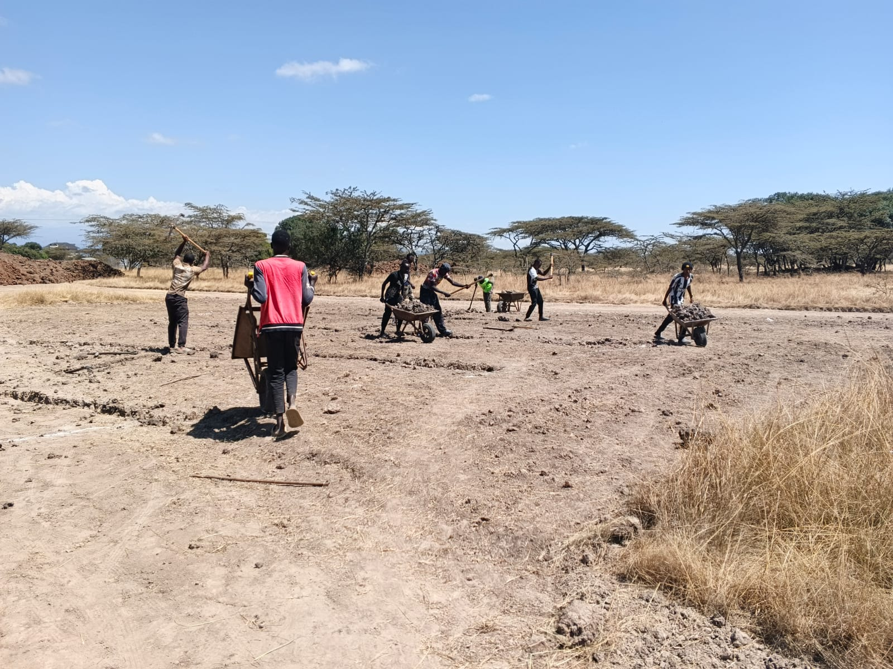
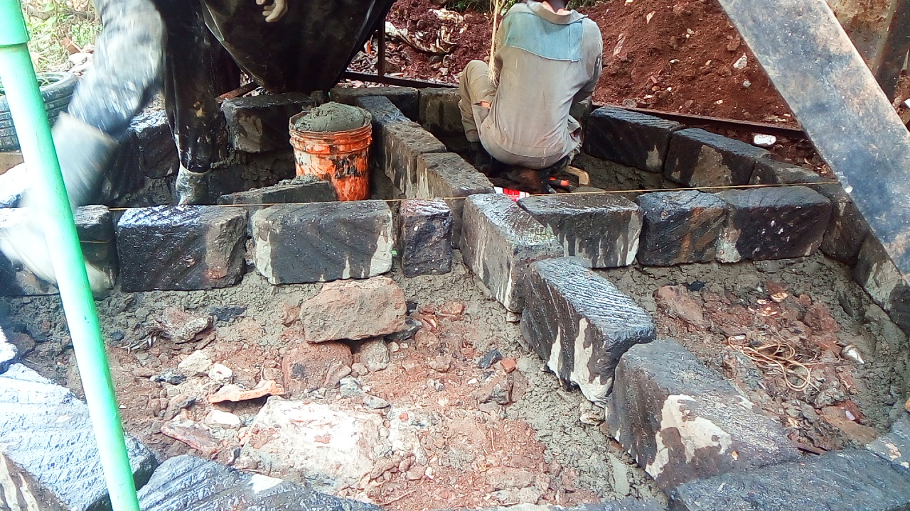

1. Mucheru World of Golf
Drainage trenching completion, green stripping, rotavator soil breaking, dam wall shaping to murram, and hardcore rock delivery & placement
- Drainage Trenches Completed: Sub-surface drainage trench excavation for Green No. 1, Green No. 2, and Green No. 3 is officially 100% complete 💯.
- Execution: Excavation crews hand-dug straight grid trench lines into the prepared sub-base, maintaining precise depth and alignment for effective sub-surface runoff and irrigation management.
💯 Milestone Achieved — Greens 1, 2 & 3 Drainage Trenches Complete
All drainage channel excavation across Greens 1, 2, and 3 has been fully completed and inspected, paving the way for immediate hardcore rock layer placement.
- Topsoil Stripping — Greens 11 & 12: Mechanical stripping of topsoil on Green No. 11 and Green No. 12 commenced and progressed smoothly throughout the day.
- Rotavator Soil Breaking: Tractor-mounted rotavator equipment was deployed to till, loosen, and pulverize compacted soil across all 7 greens stripped yesterday, preparing smooth seedbed/layer profiles.
📹 Rotavator Soil Breaking Video Documentation
- Wall Shaping & Scouring: The Sunward SWE210 heavy excavator continued shaping retaining walls and scouring the main dam basin perimeter.
- Murram Level Reached: Heavy excavation proceeded deep down to the stable murram rock layer across the entire basin floor, securing an impermeable bottom foundation.
- Earth Haulage Log: Tipper trucks logged a total of 48 trips moving excavated earth out of the dam pit. Total work hours logged for the shift: 8 hours 45 minutes.
📹 Dam Murram Level Excavation Video Documentation
- Material Delivery: Haulage and delivery of coarse hardcore quarry rocks for Greens No. 1, 2, and 3 is actively in progress.
- Laying Hardcore — Green No. 3: Manual placement and sub-base laying of hardcore rocks on Green No. 3 is currently underway to form the stable foundation layer.
📷 Golf Project Visual Documentation

Greens 11 & 12 Topsoil Stripping
Tractor pulling disc plough to strip and turn topsoil layer on Greens 11 and 12 under overcast weather.

Rotavator Soil Breaking
Tractor operating rotavator attachment across stripped green, generating dust plume as it pulverizes soil blocks.

Rotavated Field Profile
Wide perspective of tilled green surface after rotavator soil breaking, fine tilth ready for drainage work.

Drainage Trench Excavation
Work crew using pickaxes, shovels, and wheelbarrows to excavate sub-surface drainage trenches across prepared green soil.

Completed Trenching Grid
Clean, straight-line drainage trenches excavated across green surface, establishing complete sub-surface drainage network.

Completed Drainage Trenches — View 2
Alternate angle of completed drainage channels with white chalk survey lines visible along trench edges.

Hardcore Rock Laying — Green 3
Workmen manually placing coarse quarry hardcore stones into prepared sub-base on Green No. 3.

Dam Floor Scraped to Murram
Sunward SWE210 excavator bucket scraping loose subsoil away to reveal solid reddish-brown murram rock floor.

Dam Basin Wall & Floor Shaping
Full view of Sunward SWE210 excavator positioned in dam basin, shaping perimeter slope walls down to murram depth.

Dam Soil Loading Operations
Sunward SWE210 excavator loading excavated dam soil into white FAW tipper truck inside dam pit.
Earth Haulage — Tipper Truck
Blue tipper truck exiting dam excavation pit carrying load of excavated earth along haulage road.

Dam Excavation & Tipper Truck Loading
Sunward SWE210 heavy excavator operating alongside blue tipper truck inside the dam excavation basin pit.
2. Chaka Farms — Dairy, Canine & Grounds Maintenance
Dairy yield logging, cattle spraying, kennel sanitation, obedience drills, pathway hedge trimming, and landscape irrigation
- Milking Yield Log: Daily milk collection recorded across morning and evening milking sessions.
- Cattle Spraying: Morning cattle spraying routine successfully completed for tick, fly, and parasite prevention across the herd.
| Session | Morning | Evening | Total Daily Yield |
|---|---|---|---|
| Milk Yield | 3.5 Litres | 3.0 Litres | 6.5 Litres |
- Kennel Cleaning & Hygiene: Thorough washing and sanitation of all dog kennels completed.
- Kennel Manners: Daily discipline and kennel etiquette routines enforced.
- Off-Leash Socialization: Conducted off-leash walking sessions and socialization drills with farm goats and kids (baby goats) under strict handler supervision.
- Obedience Command Drills: Intensive training sessions focused on core obedience commands: Paw, Sit, Down, Obedience, and Patience commands.
📹 Canine Unit Training & Socialization Video Documentation
- 🎬 Commands Training — Main Obedience Session
- 🎬 Commands Training — Drill 01 (Sit, Paw & Down)
- 🎬 Commands Training — Drill 02 (Patience & Hold)
- 🎬 Walking Off-Leash & Socializing with Goats
- Hedge Trimming & Pruning: Kimondo spent the day trimming overgrowth and shaping the bougainvillea flowers along the primary compound driveway and walking pathway.
- Grass & Paddock Irrigation: Willy operated the irrigation sprinkler system across the main compound lawn grass and pasture paddock.
- Guesthouse Floral Care: Hand watering and maintenance of potted plants, hanging baskets, and floral displays at the guesthouse veranda terrace.
- Gardening Works: Ongoing flower bed cultivation, weeding, sweeping, and general groundskeeping across all residential and farm zones.
📷 Chaka Farms Visual Documentation

Kimondo Trimming Bougainvillea
Kimondo walking along gravel entrance driveway pruning and shaping pink bougainvillea hedge line.

Trimmed Pathway Bougainvillea
Neatly manicured bougainvillea hedge running parallel to gravel driveway and shaded acacia lawn.

Compound Lawn Irrigation
High-pressure rotary sprinklers irrigating lawn grass field under acacia tree canopy.

Lawn Grass Sprinkler Care
Pop-up sprinkler spraying green turf near white garden furniture set under umbrella shade.

Paddock Water Lines Setup
Black polyethylene water supply pipes connected and routed across paddock field for pasture irrigation.

Guesthouse Hanging Ferns
Ornamental wrought iron stand holding healthy green hanging asparagus ferns on guesthouse veranda.

Guesthouse Veranda Terrace
Freshly watered terracotta-tiled upper terrace featuring potted ornamental plants and climbing ivy.
3. Kabete Residence — Painting, Masonry & Domestic Care
Sentry house wall & ceiling painting, door & furniture staining, storage tank slab construction, fireplace clearance, and pet feeding
- Interior Wall Preparation: Painter in protective overalls prepped and sanded interior plaster walls at the sentry house.
- Ceiling Paint Works: Application of fresh white ceiling paint inside the sentry using extension rollers.
- Sentry Door Painted: Metal security entrance door at the sentry painted in sleek matte black finish.
- Sentry Seats & Benches: Outdoor wooden sentry benches painted in durable weather-resistant black paint.
- Sentry Furniture Painted: Timber desks, tables, and X-back wooden chairs sanded and stained in deep rich mahogany wood tones.
- Masonry Blockwork: Masons continued laying cut grey stone blocks with mortar to build perimeter walls and internal chamber dividers for the main water storage tank foundation slab.
- Reinforcement: Continuous metal hoop iron strips embedded between block courses to reinforce structural integrity against lateral soil and water pressure.
- Clearance in Progress: Work crew cleared accumulated soil, loose rubble, and broken masonry around the circular outdoor fireplace pit to prepare the area for upcoming ground upgrades.
- Evening Feeding Routine: Evening meal service provided for golden retriever Ajabu and resident cats on the tiled veranda.
📷 Kabete Residence Visual Documentation

Sentry Interior Wall Preparation
Painter wearing red protective coveralls sanding plaster wall near electrical outlets inside sentry.

Sentry Ceiling Painting
Painter using long extension roller to apply fresh white ceiling coat inside sentry house.

Sentry Door — Painted Black
Full view of freshly painted black metal security door with glass panes at sentry stone entrance.

Sentry Bench — Painted Black
Sturdy wooden bench seat painted in protective black finish, positioned outside near sentry wall.

Sentry Desk — Stained Finish
Solid timber writing desk stained in rich dark wood finish resting outside sentry wall.

Sentry Wooden Chair — Finished
Classic X-back wooden dining chair newly varnished in dark amber stain staged on patio.

Residence Courtyard View
Interior perspective looking through black iron security window grilles toward sentry wall and courtyard palm tree.

Fireplace Pit Masonry & Base
Cut stone blocks laid with wet mortar forming circular masonry wall around fireplace pit base.

Storage Tank Wall Construction
Mason seated on block wall laying heavy stone masonry units around central tank slab pit.

Hoop Iron Wall Reinforcement
Galvanized hoop iron metal straps laid horizontally across stone masonry wall joints for structural bonding.

Fireplace Area Clearance
Circular brick masonry fireplace pit with excavated earth and loose stone rubble piled along perimeter.

Ajabu — Evening Feeding
Golden dog Ajabu enjoying dinner from a bowl on the terracotta tiled veranda floor.

Resident Cats — Evening Meal
Three resident cats eating evening meal from individual bowls on tiled floor inside Kabete residence.
4. Amani Cottage — Security Installation
Perimeter security enhancement and CCTV camera system installation
- CCTV Installation: Technical installation of pan-tilt-zoom smart CCTV security cameras completed at Amani Cottage to provide full perimeter monitoring and security overview.
📷 Amani Cottage Visual Documentation

Amani CCTV Camera Installation
Smart dual-antenna pan-tilt CCTV camera installed on interior wood console next to timber-framed window.